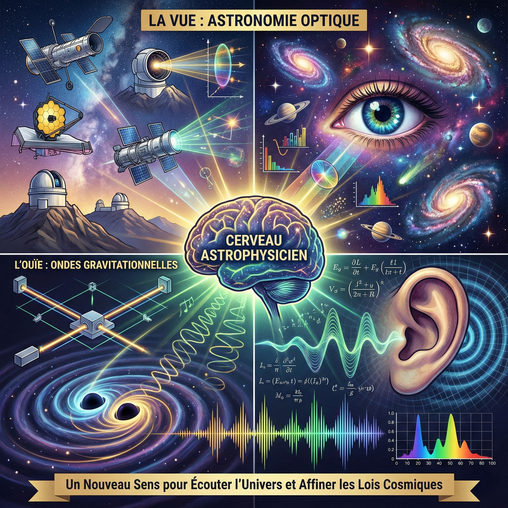

Ondes gravitationnelles : après la vue, l'ouïe
Luc Blanchet – Dîner-débat de la promotion X77, 25 novembre 2025
Dîner-débat X77 – Ondes gravitationnelles
Podcast de 11 mn résumant la conférence sur les ondes gravitationnelles